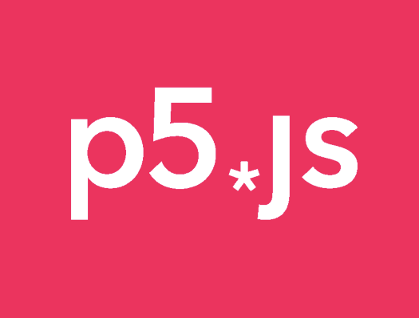
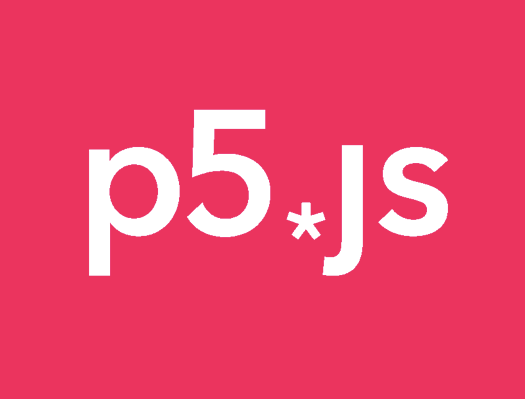
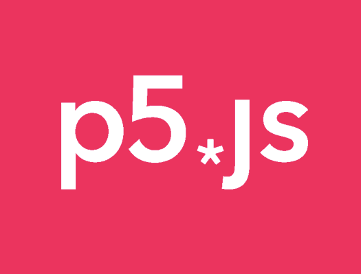

Tecnologia Utlitzada:
En aquest projecte s'han utilitzat les tecnologies de p5.js,
p5sound.js i HTML per a poder visualitzar el resultat.
 

L'objectiu d'aquest projecte és crear una cara que reaccionés al so que s'escolta a través del micròfon.
Aquest projecte s'ha portat a terme a l'assignatura de Projectes de gràfica interactiva.
En aquest projecte s'han utilitzat les tecnologies de p5.js,
p5sound.js i HTML per a poder visualitzar el resultat.

Juntament amb la mirada, és un dels mitjans més importants per a expressar emocions i estats d'ànim.
A través del coneixement i de l'observació de les expressions facials (és a dir, la cara en moviment i no com un objecte estàtic)
podem aconseguir una millor comprensió del que ens comuniquen els altres.
Comença a interacciónar amb la cara responsive, només has de posar-li imaginació...
Potser és mickey mousse o també pot ser el teu artista favorit, simplement deixát portar per la teva imaginació.